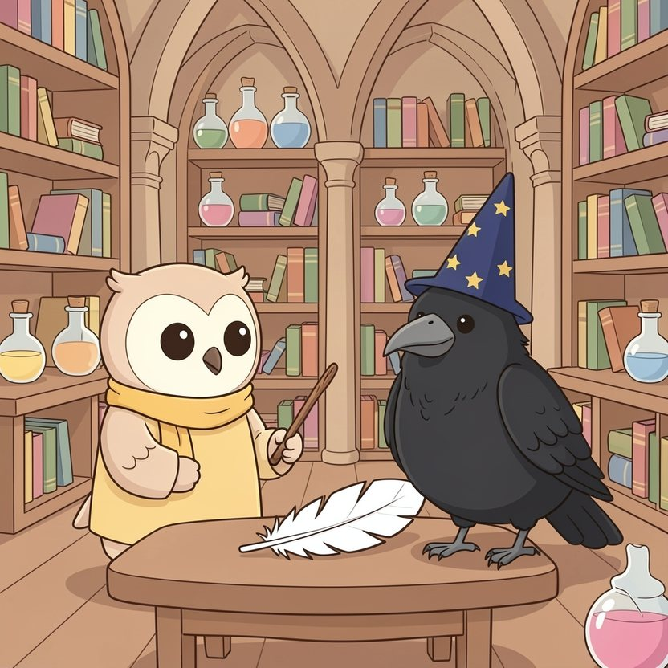

Titistoire › Les Étoiles (3-6 ans)
Plume, apprentie magicienne
Une histoire de Plume la chouette pour parler de : se tromper et recommencer.

▶ Écouter et regarder l'histoire
Gratuit, sans inscription : la voix lit, le texte suit mot à mot, les images tournent comme dans un album.
Le texte de l'histoire
Tout en haut du château de Hauteroche, dans la tour qui penche, vit Maître Balthazar. C'est un vieux corbeau enchanteur, coiffé d'un chapeau constellé d'étoiles, les poches toujours pleines de miettes.
Depuis lundi, il a une apprentie : Plume. Elle a dévoré tous les grimoires, ces gros livres de magie, et connaît chaque formule sur le bout des plumes. Il ne lui reste plus qu'à essayer.
« Premier sort, annonce Maître Balthazar : faire voler une plume. C'est le plus facile. » Plume ferme les yeux très fort et lève sa baguette. « Abracadabri, abracadabra ! »
Pouf ! La plume ne vole pas. Elle se change en grenouille. Une grosse grenouille verte. « Coâ », ronchonne-t-elle, pas contente du tout.
Plume recommence. Pouf ! Cette fois, un nuage crève au-dessus de sa tête : il pleut de la soupe. Elle recommence. Pouf ! Le chapeau de Maître Balthazar se met à chanter. Très faux.
« Ce n'est rien, assure le vieux corbeau en épongeant la soupe sur ses plumes. Recommence. » Mais Plume a les yeux qui piquent. Dans les livres, ça marchait toujours du premier coup.
Le mardi, elle rate neuf fois. La plume devient une saucisse, un nuage, une chaussette. Le mercredi, elle rate dix-sept fois. Et le jeudi, catastrophe, elle se rate elle-même : la voilà bleue de la tête aux pattes.
En bas, dans la cour, on commence à ricaner. « Tiens, il pleut de la soupe ! C'est encore la petite chouette ! » Sire Gontran, le paon, en fait même une chanson, qu'il claironne à qui veut l'entendre.
Le soir, Plume abandonne sa baguette sur la table. « Je suis nulle, renifle-t-elle. Je n'y arriverai jamais. Les vrais magiciens, eux, ils ne se trompent pas. »
Cette nuit-là, elle noue son baluchon. Trois livres, une noisette, et c'est tout. Puis elle descend l'escalier en colimaçon, marche après marche, sur la pointe des pattes.
Mais sur la dernière marche, quelqu'un l'attend. C'est la grenouille du lundi. « Coâ. Avant de filer, tu devrais jeter un œil dans le grand coffre, là-haut. Celui que Balthazar ne montre à personne. »
Plume hésite. Un coffre secret ? Et pourquoi ? C'est plus fort qu'elle : elle remonte.
Le couvercle grince. Dedans, pas de trésor. Des cahiers. Des dizaines de vieux cahiers écornés, griffonnés d'une écriture maladroite, avec des taches plein les pages.
À la lueur de la lanterne, Plume déchiffre : « Essai numéro 1 : raté. La plume a pris feu. Essai numéro 2 : raté. J'ai transformé mon maître en théière. Essai numéro 212 : raté, mais moins. »
Elle tourne les pages. Raté. Raté. Raté. Puis elle referme le cahier. Sur la couverture, un nom, tracé par un tout petit corbeau : Balthazar.
« Ah. Tu as trouvé mes trésors. » Maître Balthazar est là, en chemise de nuit, une aile posée sur son épaule. « Quatre cent trois essais, pour faire voler ma première plume. J'ai gardé chaque raté, précieusement. »
« Mais… pourquoi garder les ratés ? » Le vieux corbeau serre un cahier contre son cœur. « Parce que ce sont eux qui m'ont tout appris. La plume qui brûle m'a appris à parler moins fort. La théière, à bien articuler. »
Il lui adresse un clin d'œil. « Un magicien qui ne se trompe pas, Plume, ça n'existe pas. Ou alors, c'est qu'il n'essaie plus rien. »
Le lendemain, Plume ouvre un cahier tout neuf. De sa plus belle écriture, elle inscrit : « Essai numéro 31. » Un coup de baguette… Pouf ! Une carotte. Alors elle note : « Raté. J'ai dit abracadabri trop vite. »
Essai 32 : la plume frémit. Essai 40 : elle se soulève d'un doigt, hésite, et retombe. Plume ne pleure plus. Elle note, elle réfléchit, elle recommence.
Et un matin… « Abracadabri, abracadabra. » La plume se soulève. Elle monte, elle tournoie, elle danse dans un rayon de soleil, sous les yeux de Maître Balthazar. Ça y est. Elle vole.
Plume ouvre la fenêtre. La plume s'échappe, et derrière elle cent autres, mille autres, qui tourbillonnent au-dessus du château comme une neige d'été.
En bas, plus personne ne chante. On regarde, bouche bée. Même Sire Gontran. Surtout Sire Gontran, qui se tord le cou pour comprendre où sont passées les belles plumes de sa queue.
Ce soir-là, à la lueur de la bougie, Plume écrit dans son cahier : « Essai numéro 58 : réussi. » Elle dessine une petite étoile. Puis elle ajoute, en plus petit : « Demain, j'essaie quelque chose que je ne sais pas faire. »